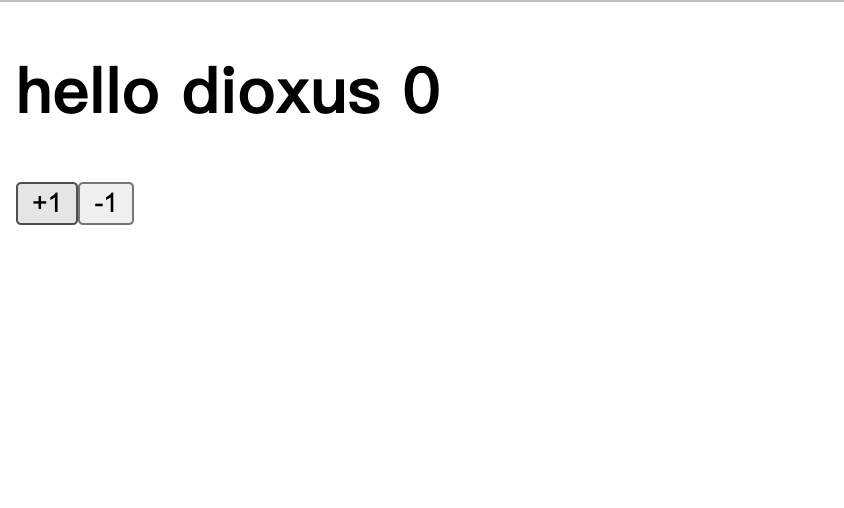

介绍
Dioxus 学习
# Dioxus
一个rust wasm框架，类似于react
官方GitHub里有很多例子，可以参考参考
# 1.hello world
也可以使用官方推荐的方式
Dioxus | An elegant GUI library for Rust |一个优雅的 Rust GUI 库 (dioxuslabs.com) (opens new window)
1.安装工具链
cargo install trunk
rustup target add wasm32-unknown-unknown
2.初始化项目
cargo new rust-dioxus
3.添加依赖
[dependencies]
dioxus = "0.4.0"
dioxus-web = "0.4.0"
tracing = "0.1.37"
tracing-wasm = "0.2.1"
4.编写组件
#![allow(non_snake_case)]
use dioxus::prelude::*;
use tracing::info;
fn main() {
tracing_wasm::set_as_global_default();
dioxus_web::launch(App);
}
fn App(cx: Scope) -> Element {
let mut count = use_state(cx, || 0);
cx.render(rsx!(
h1{
"hello dioxus abc123 {count}"
}
button{
onclick: move|e|{
info!("click {e:?}");
count+=1
},
"+1"
}
button{
onclick:move |_|{count-=1},
"-1"
}
))
}
5.启动
trunk serve


# 2.fermi
dioxus全局状态管理fermi - Rust (docs.rs) (opens new window)
自己使用Arc和Mutex封装过，但是不能触发页面状态更新，后面继续尝试
官方例子dioxus/examples/fermi.rs at master (opens new window)
lib.rs
#![allow(non_snake_case)]
#![allow(unused)]
use dioxus::{
html::{input_data::keyboard_types::Key, p},
prelude::*,
};
use fermi::{Atom, AtomRef, AtomRoot, AtomState, use_init_atom_root, use_atom_ref};
use std::{
collections::BTreeMap,
rc::Rc,
sync::{atomic::AtomicU32, Arc, Mutex},
};
use tracing::info;
mod components;
use components::{todo_filter, todo_input, todo_item};
#[derive(Debug, Clone, PartialEq)]
pub struct TodoItem {
id: u32,
title: String,
completed: bool,
}
pub type Todos = BTreeMap<u32, TodoItem>;
#[derive(Debug, Clone, PartialEq)]
pub enum Filter {
All,
Active,
Completed,
}
impl Filter {
pub fn default() -> Self {
Self::All
}
}
//使用静态注册全局变量
static FERMI_TODOS: AtomRef<Todos> = AtomRef(|_| Todos::default());
pub fn App(cx: Scope) -> Element {
//初始化fermi
use_init_atom_root(cx);
//使用fermi全局状态，注意第二个参数传入引用
let todos=use_atom_ref(cx, &FERMI_TODOS);
let filter = use_state(cx, Filter::default);
let filter_todos = todos.read()
.iter()
.filter(|(_, todo)| match filter.get() {
Filter::All => true,
Filter::Active => !todo.completed,
Filter::Completed => todo.completed,
})
.map(|(id, todo)| *id)
.collect::<Vec<u32>>();
info!("todos {:#?}",todos.read());
cx.render(rsx!(
section { class: "todoapp",
style { include_str!("./asserts/tomvc.css")},
header {
class:"header",
h1 {"todos"}
todo_input{
}
section {
ul{
class:"todo-list",
filter_todos.iter().map(|id|{
rsx!(
todo_item{}
)
}),
}
}
todo_filter{}
}
}
))
}
todo_input.rs
use std::ops::Add;
use dioxus::{html::input_data::keyboard_types::Key, prelude::*};
use fermi::use_atom_ref;
use tracing::info;
use crate::{Todos, FERMI_TODOS};
#[inline_props]
pub fn todo_input(cx: Scope) -> Element {
let draft = use_state(cx, String::new);
let todos = use_atom_ref(cx, &FERMI_TODOS);
let id = todos.read().len() as u32;
cx.render(rsx!(input {
class: "new-todo",
placeholder: "whats needs to be done?",
autofocus: true,
value: "{draft}",
oninput: move |evt| {
draft.set(evt.value.clone());
},
onkeydown: move |evt| {
if evt.key() == Key::Enter {
todos.write().insert(
id,
crate::TodoItem {
id: id,
title: draft.get().clone(),
completed: false,
},
);
draft.make_mut().clear();
}
}
}))
}
# 3.use_shared_state
使用该钩子函数也能实现上面fermi全局状态管理
其实跟vue inject&provider 或者react context差不多
- 定义数据结构
- 定义获取方法
- 在上层传入
#![allow(non_snake_case)]
#![allow(unused)]
use dioxus::{
html::{input_data::keyboard_types::Key, p},
prelude::*,
};
use fermi::{use_atom_ref, use_init_atom_root, Atom, AtomRef, AtomRoot, AtomState};
use std::{
collections::BTreeMap,
rc::Rc,
sync::{atomic::AtomicU32, Arc, Mutex},
};
use tracing::info;
mod components;
use components::{todo_filter, todo_input, todo_item};
#[derive(Debug, Clone, PartialEq)]
pub struct TodoItem {
id: u32,
title: String,
completed: bool,
}
pub type Todos = BTreeMap<u32, TodoItem>;
#[derive(Debug, Clone, PartialEq)]
pub enum Filter {
All,
Active,
Completed,
}
impl Filter {
pub fn default() -> Self {
Self::All
}
}
static FERMI_TODOS: AtomRef<Todos> = AtomRef(|_| Todos::default());
#[derive(Debug, Clone, PartialEq)]
pub struct MyTodo{
data:BTreeMap<u32,TodoItem>
}
pub fn use_my_todo(cx:&ScopeState)->&UseSharedState<MyTodo>{
use_shared_state::<MyTodo>(cx).expect("没有传入todo")
}
pub fn App(cx: Scope) -> Element {
//use_init_atom_root(cx);
//let todos = use_atom_ref(cx, &FERMI_TODOS);
let filter = use_state(cx, Filter::default);
use_shared_state_provider(cx, ||MyTodo{data:BTreeMap::default()});
let todos=use_my_todo(cx).read();
let filter_todos = todos.data
.iter()
.filter(|(_, todo)| match filter.get() {
Filter::All => true,
Filter::Active => !todo.completed,
Filter::Completed => todo.completed,
})
.map(|(id, todo)| *id)
.collect::<Vec<u32>>();
info!("todos {:#?}", todos.data);
cx.render(rsx!(
section { class: "todoapp",
style { include_str!("./asserts/tomvc.css")},
header {
class:"header",
h1 {"todos"}
todo_input{
}
section {
ul{
class:"todo-list",
filter_todos.iter().map(|id|{
rsx!(
todo_item{
id:*id
}
)
}),
}
}
todo_filter{}
}
}
))
}
# 4.使用local storage
安装依赖web-sys
cargo add web-sys --features Location/Storage
可以使用deref和derefMut简化操作
核心目的是使用类似于指针解引用的方式来访问和修改items字段，而不需要显式地调用items字段。
这段代码实现了两个trait：Deref和DerefMut，用于对Todos结构体进行解引用操作。 首先，impl Deref for Todos实现了Deref trait，指定了关联类型Target为HashMap<u32, TodoItem>。然后，实现了deref方法，该方法返回了self.items的不可变引用，即返回了&self.items。 接着，impl DerefMut for Todos实现了DerefMut trait。然后，实现了deref_mut方法，该方法返回了self.items的可变引用，即返回了&mut self.items。 这段代码的作用是让Todos结构体可以像HashMap一样进行解引用操作，方便对items字段进行读取和修改。
const TODOS_KEY: &str = "todos";
pub fn get_store() -> Storage {
let window = web_sys::window().unwrap();
window
.local_storage()
.unwrap()
.expect("user did not allow local storage")
}
#[derive(Debug, PartialEq, Eq, Clone, Serialize, Deserialize)]
pub struct Todos {
items: HashMap<u32, TodoItem>,
}
impl Default for Todos {
fn default() -> Self {
let store = get_store();
let todos: Todos = if let Ok(Some(todos)) = store.get_item(TODOS_KEY) {
serde_json::from_str(&todos).unwrap()
} else {
Self {
items: HashMap::default(),
}
};
todos
}
}
//可以使用Deref 和 DerefMut来简化读取，不用在了
impl Deref for Todos{
type Target=HashMap<u32,TodoItem>;
fn deref(&self) -> &Self::Target {
&self.items
}
}
impl DerefMut for Todos{
fn deref_mut(&mut self) -> &mut Self::Target{
&mut self.items
}
}
# 5.同时编译到web和desktop
想要一套代码同时编译到两个平台，要考虑到平台之间的差异性，然后编写适配代码
可以使用rust features来实现条件编译
可以参考条件编译 Features - Rust语言圣经(Rust Course) (opens new window)
[package]
name = "rust-dioxus"
version = "0.1.0"
edition = "2021"
# See more keys and their definitions at https://doc.rust-lang.org/cargo/reference/manifest.html
[dependencies]
dioxus = "0.4.0"
dioxus-desktop = { version = "0.4.0", optional = true }
dioxus-web = {version = "0.4.0",optional = true}
fermi = "0.4.0"
serde = { version = "1.0.180", features = ["derive"] }
serde_json = "1.0.104"
tracing = "0.1.37"
tracing-subscriber = { version = "0.3.17", optional = true }
tracing-wasm = {version="0.2.1",optional = true}
web-sys = {version = "0.3.64",features = ["Storage","Location"],optional = true}
[features]
default=["desktop"]
web=["dioxus-web", "tracing-wasm", "web-sys"]
desktop=["dioxus-desktop","tracing-subscriber"]
Lib 文件中是通用逻辑，主要都是UI相关的，然后本地存储下，desktop使用文件系统，web使用local storage
lib.rs
#![allow(non_snake_case)]
use dioxus::prelude::*;
use dioxus_elements::input_data::keyboard_types::Key;
use serde::{Deserialize, Serialize};
use std::{
collections::HashMap,
ops::{Deref, DerefMut},
};
pub mod platform;
use platform::{Store,get_store};
#[derive(PartialEq, Eq, Clone, Copy)]
pub enum FilterState {
All,
Active,
Completed,
}
#[derive(Debug, PartialEq, Eq, Clone, Serialize, Deserialize)]
pub struct TodoItem {
pub id: u32,
pub checked: bool,
pub contents: String,
}
#[derive(Debug, PartialEq, Eq, Clone, Serialize, Deserialize)]
pub struct Todos {
items: HashMap<u32, TodoItem>,
next_id:u32,
}
impl Default for Todos {
fn default() -> Self {
let store = get_store();
store.get()
}
}
//可以使用Deref 和 DerefMut来简化读取，不用在了
impl Deref for Todos {
type Target = HashMap<u32, TodoItem>;
fn deref(&self) -> &Self::Target {
&self.items
}
}
impl DerefMut for Todos {
fn deref_mut(&mut self) -> &mut Self::Target {
&mut self.items
}
}
impl Todos {
pub fn save(&self) {
let store = get_store();
store
.set( &self)
}
}
pub fn App(cx: Scope<()>) -> Element {
let todos = use_state(cx, Todos::default);
let filter = use_state(cx, FilterState::default);
let draft = use_state(cx, || "".to_string());
let todo_id=todos.get().next_id;
// Filter the todos based on the filter state
let mut filtered_todos = todos
.iter()
.filter(|(_, item)| match **filter {
FilterState::All => true,
FilterState::Active => !item.checked,
FilterState::Completed => item.checked,
})
.map(|f| *f.0)
.collect::<Vec<_>>();
filtered_todos.sort_unstable();
let active_todo_count = todos.values().filter(|item| !item.checked).count();
let active_todo_text = match active_todo_count {
1 => "item",
_ => "items",
};
let show_clear_completed = todos.values().any(|todo| todo.checked);
let selected = |state| {
if *filter == state {
"selected"
} else {
"false"
}
};
cx.render(rsx! {
section { class: "todoapp",
style { include_str!("./asserts/tomvc.css") }
header { class: "header",
h1 {"todos"}
input {
class: "new-todo",
placeholder: "What needs to be done?",
value: "{draft}",
autofocus: "true",
oninput: move |evt| {
draft.set(evt.value.clone());
},
onkeydown: move |evt| {
if evt.key() == Key::Enter && !draft.is_empty() {
todos.make_mut().insert(
todo_id,
TodoItem {
id: todo_id,
checked: false,
contents: draft.to_string(),
},
);
todos.make_mut().next_id+=1;
todos.save();
draft.set("".to_string());
}
}
}
}
section {
class: "main",
if !todos.is_empty() {
rsx! {
input {
id: "toggle-all",
class: "toggle-all",
r#type: "checkbox",
onchange: move |_| {
let check = active_todo_count != 0;
for (_, item) in todos.make_mut().iter_mut() {
item.checked = check;
}
todos.save();
},
checked: if active_todo_count == 0 { "true" } else { "false" },
}
label { r#for: "toggle-all" }
}
}
ul { class: "todo-list",
filtered_todos.iter().map(|id| rsx!(TodoEntry {
key: "{id}",
id: *id,
todos: todos,
}))
}
(!todos.is_empty()).then(|| rsx!(
footer { class: "footer",
span { class: "todo-count",
strong {"{active_todo_count} "}
span {"{active_todo_text} left"}
}
ul { class: "filters",
for (state, state_text, url) in [
(FilterState::All, "All", "#/"),
(FilterState::Active, "Active", "#/active"),
(FilterState::Completed, "Completed", "#/completed"),
] {
li {
a {
href: url,
class: selected(state),
onclick: move |_| filter.set(state),
prevent_default: "onclick",
state_text
}
}
}
}
show_clear_completed.then(|| rsx!(
button {
class: "clear-completed",
onclick: move |_| {
todos.make_mut().retain(|_, todo| !todo.checked);
todos.save();
},
"Clear completed"
}
))
}
))
}
}
footer { class: "info",
p { "Double-click to edit a todo" }
p { "Created by ", a { href: "http://github.com/jkelleyrtp/", "jkelleyrtp" }}
p { "Part of ", a { href: "http://todomvc.com", "TodoMVC" }}
}
})
}
#[derive(Props)]
pub struct TodoEntryProps<'a> {
todos: &'a UseState<Todos>,
id: u32,
}
pub fn TodoEntry<'a>(cx: Scope<'a, TodoEntryProps<'a>>) -> Element {
let is_editing = use_state(cx, || false);
let todos = cx.props.todos.get();
let todo = &todos[&cx.props.id];
let completed = if todo.checked { "completed" } else { "" };
let editing = if **is_editing { "editing" } else { "" };
cx.render(rsx!{
li {
class: "{completed} {editing}",
div { class: "view",
input {
class: "toggle",
r#type: "checkbox",
id: "cbg-{todo.id}",
checked: "{todo.checked}",
oninput: move |evt| {
cx.props.todos.make_mut().get_mut(&cx.props.id).unwrap().checked = evt.value.parse().unwrap();
todos.save();
}
}
label {
r#for: "cbg-{todo.id}",
ondblclick: move |_| is_editing.set(true),
prevent_default: "onclick",
"{todo.contents}"
}
button {
class: "destroy",
onclick: move |_| { cx.props.todos.make_mut().remove(&todo.id);todos.save(); },
prevent_default: "onclick",
}
}
is_editing.then(|| rsx!{
input {
class: "edit",
value: "{todo.contents}",
oninput: move |evt|{
cx.props.todos.make_mut().get_mut(&cx.props.id).unwrap().contents = evt.value.clone();
todos.save();
},
autofocus: "true",
onfocusout: move |_| is_editing.set(false),
onkeydown: move |evt| {
match evt.key() {
Key::Enter | Key::Escape | Key::Tab => is_editing.set(false),
_ => {}
}
},
}
})
}
})
}
# platform适配
在mod.rs 中定义一些接口也就是trait，然后让不同的平台去实现具体的逻辑
platform/mod.rs
use crate::{FilterState, Todos};
#[cfg(feature = "desktop")]
pub mod desktop;
#[cfg(feature = "web")]
pub mod web;
pub trait Store {
fn get(&self) -> Todos;
fn set(&self, item: &Todos);
}
#[cfg(feature = "web")]
pub use web::get_store;
#[cfg(feature = "desktop")]
pub use desktop::get_store;
#[cfg(feature = "web")]
impl Default for FilterState {
fn default() -> Self {
let url = web_sys::window().unwrap().location().hash().unwrap();
match url.as_str() {
"#/active" => FilterState::Active,
"#/completed" => FilterState::Completed,
_ => FilterState::All,
}
}
}
#[cfg(not(feature = "web"))]
impl Default for FilterState {
fn default() -> Self {
FilterState::All
}
}
# web.rs
使用大量default trait和deref,derefMut trait来简化操作
#![cfg(feature="web")]
use std::ops::Deref;
use web_sys::Storage;
use super::Store;
const TODOS_KEY: &str = "todos";
pub struct LocalStorage(Storage);
impl Deref for LocalStorage{
type Target=Storage;
fn deref(&self)->&Self::Target{
&self.0
}
}
impl Default for LocalStorage {
fn default() -> Self {
let window = web_sys::window().unwrap();
Self(
window
.local_storage()
.unwrap()
.expect("user did not allow local storage"),
)
}
}
impl Store for LocalStorage {
fn get(&self)->crate::Todos {
if let Ok(Some(value)) = self.0.get(TODOS_KEY) {
serde_json::from_str(&value).unwrap()
}else{
Default::default()
}
}
fn set(&self,item:&crate::Todos) {
let content=serde_json::to_string(&item).unwrap();
self.0.set_item(TODOS_KEY, &content).unwrap();
}
}
pub fn get_store() -> impl Store {
LocalStorage::default()
}
# desktop.rs
#![cfg(feature = "desktop")]
use crate::Todos;
use std::collections::HashMap;
use std::io::prelude::*;
use std::{env, fs::File, path::PathBuf};
use tracing::info;
use super::Store;
const TODO_FILE: &str = "todo.json";
pub struct FileStore {
path: PathBuf,
}
impl Default for FileStore {
fn default() -> Self {
let path = env::current_dir().unwrap().join(TODO_FILE);
info!("desktop FileStore path: {:?}", path);
Self { path }
}
}
impl Store for FileStore {
fn get(&self) -> crate::Todos {
if let Ok(mut file) = File::open(&self.path) {
let mut content = String::new();
file.read_to_string(&mut content).unwrap();
if content.is_empty() {
return Todos {
items: HashMap::new(),
next_id: 0,
};
}
serde_json::from_str(&content).unwrap()
} else {
File::create(&self.path).unwrap();
return Todos {
items: HashMap::new(),
next_id: 0,
};
}
}
fn set(&self, item: &crate::Todos) {
let content = serde_json::to_string(&item).unwrap();
let mut file = File::create(&self.path).unwrap();
file.write_all(content.as_bytes()).unwrap();
}
}
pub fn get_store() -> impl Store {
FileStore::default()
}
# 6.打包
# 1.下载官方cli
cargo install dioxus-cli
# 2.打包到web
dx build
# 3.打包到desktop
dx bundle
# 7.可以同时运行两个端
同时安装dioxin-cli 和trunk
让应用程序默认feature为desktop
dx serve --platform desktop
trunk serve --no-default-features --features web
这样可以同时编译运行两个端